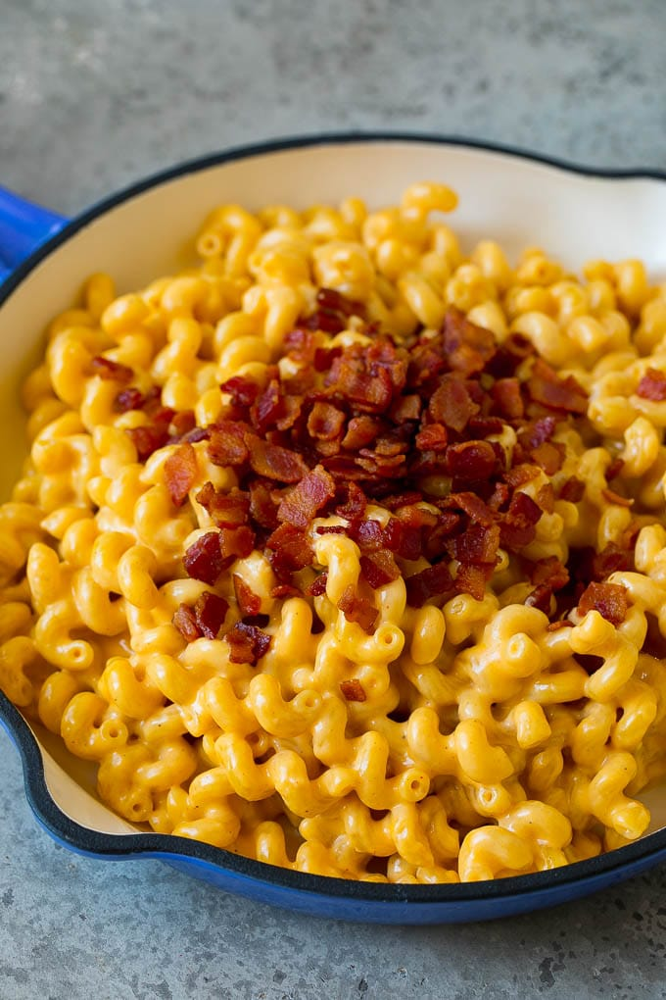

Dr. Meas*'s Doctored Mac And Cheeses

Description
My go to dish when it's late, and I realize I forgot to eat dinner. As much as I love good, homemade macaroni and cheese, that takes a lot of effort. And sometimes, I'm just craving the flavor of Kraft Mac and Cheese instead.
This is another one of those recipes that takes something simple that is good on its own right, and just elevates it by adding more. A little bit of bacon for some extra flavor. Some extra cheese for some more gooey cheesy goodness. A few seasonings for some extra notes. And some hot sauce to give just a little kick.
A warning though. There's a lot of butter and cheese in this. Probably not great for the heart!
Ingredients
- 1 box Kraft Mac and Cheese
- 6 cups water
- 2 tbsp. olive oil
- 1 tsp. salt
- 8 tbsp. butter
- 1/4 cup milk
- 1 cup bacon bits
- 1 cup shredded mozzerella cheese
- 1 tsp. smoked paprika
- 1 tsp. garlic powder
- 1 tbsp. Frank's Original Cayenne Pepper Sauce
Instructions
- Add water, olive oil, and salt to medium saucepan. Bring to boil.
- Add macaroni to saucepan. Let cook for 7 to 8 minutes, stirring occasionally.
- Drain macaroni and return to saucepan.
- Cut butter into tablespoon sized chunks. Microwave for 5 to 15 seconds to soften.
- Add cheese powder from packet to saucepan, along with butter, bacon bits, mozzerella cheese, smoked paprika, garlic powder, and hot sauce.
- Combine slightly, and let sit for 1 minute until butter and cheese have melted.
- Add milk and mix until cheese powder has formed "sauce".
- Serve in bowls.
*Legal disclaimer that Shawn Meas is not actually a doctor.
Return to main